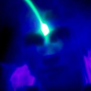

story
LPL started as a simple prototype. It had two buttons and was very slow. It was discovered by Joerg Miedza, a prominent member of the light-painting community. The app was very limited, but Joerg saw it as the next step in the evolution of light-painting. He wanted to know if it could be improved, so he emailed the developer. Ever since then, Josh and Joerg have been exchanging ideas and improving LPL.
Joerg Miedza: Artist
Joerg Miedza has been creating movies and photos using special techniques since the late 90's. He is the co-founder of the german light-art project LAPP-PRO. In this project, the LAPP-Team developed a unique brand of light painting: LightArt Performance Photography, or LAPP for short. The skills Joerg acquired working with motion pictures allowed him to contribute significantly to the performance and artistic aspect of LAPP photography.
His personal work is at miedza.de
There is also a book of the work: Painting With Light
Email: joerg@miedza.de
Josh Beckwith: Developer
Josh has always been obsessed with science and technology - and as a child, he dreamed of becoming an inventor. Now, he's a senior interactive developer at Tool of North America.
Email: josh@lightpaintlive.com